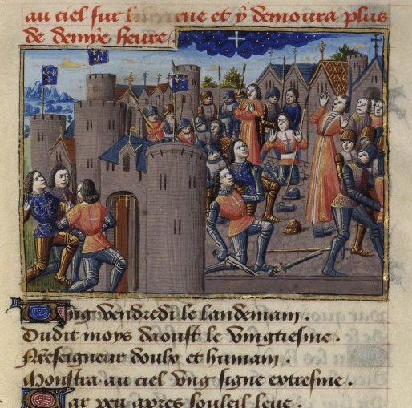

Illumination d'un manuscript du 15ᵉ siècle Ms. Bibliothèque Nationale, Fr.5054, fol. 221 rodépeignant
l'événement du 20 août

À Bayonne, ainsi qu'ils entraient dans la dite ville, le ciel à celle heure fut vu
[cler et l'air] bien pur, où apparut, dans une nuée, une croix blanche, au droit de la dite ville, au lez vers les
parties d'Espagne?; laquelle croix, sans se mouvoir, demeura bien l'espace de 1 h. D'aucuns disaient que au
commencement, sur elle avait la semblance d'un crucifix couronné d'une couronne sur le chef, laquelle se mua en une
fleur de lis?; dont chacun fut bien émerveillé, mêmement ceux de ladite cité de voir telle merveille?; et
incontinent prinrent les enseignes qui portaient des croix rouges, étant sur leurs tours et portes et, eu lieu de
celles-ci, mirrent les bannières de France. De cette merveille ay icy fait un petit de memoire, selon la copie d'une
certification qui m'a été envoyée?; laquelle ledit comte de Dunois avait envoyé au Roi Charles, signé de sa main, et
scellée de son sceau armoyé de ses armes, écrite du 21ᵉ jour d'août, l'an 1451, et y avait : ainsi signé, Le
Bâtard D'OrléansChronique de Mathieu d'Escouchy, G. du Fresne de Beaucourt, vol. I., Paris, 1863 < Deliyannis, Yannis: "1451, August 20th : Bayonne (France)", Magonia Exchange, 5 juin 2007.